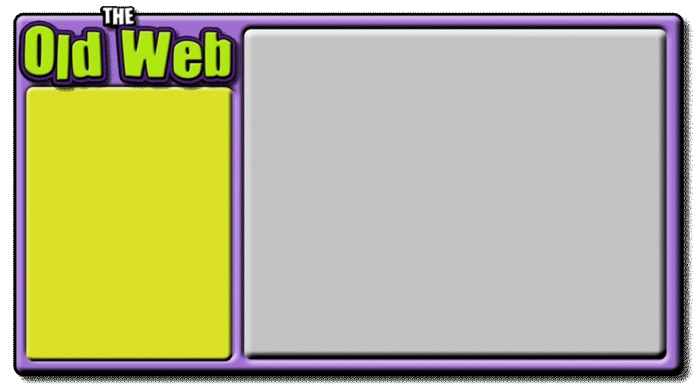
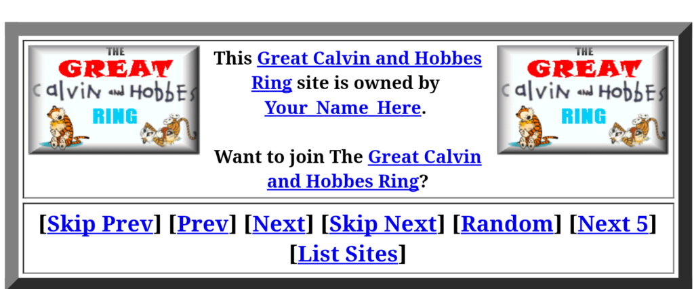
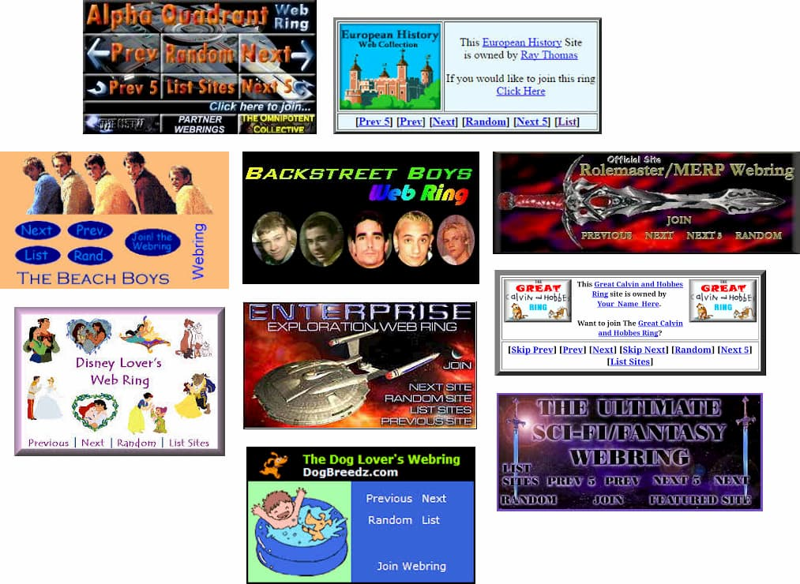

Another one of the most popular methods to discover websites was through webrings, similar to 88 x 31 buttons, which connected groups of websites with similar themes/communities. Webrings helped users explore the internet by moving from one site to another, creating small online communities based on shared interests.

Webrings often had their own homepage and members would add a widget of the webrings they were apart of to their personal sites (usually found at the very bottom of the page) so viewers could visit the connected sites.
